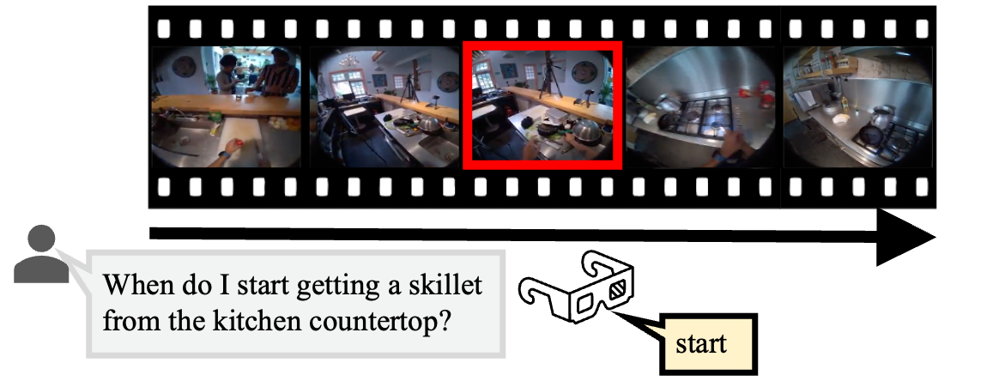

Respond only when the queried action boundary begins or ends.

Streaming video models should respond the moment an event unfolds, not after the moment has passed. Yet existing online VideoQA benchmarks remain largely retrospective. They pause the video at fixed timestamps, pose questions about current or past events, and score models only at those moments. This protocol leaves streaming predictions untested. To close this gap, we introduce SPOT-Bench, featuring multi-turn proactive queries that evaluate general streaming perception and assistive capabilities required by an always-on, real-time assistant. SPOT-Bench comes with Timeliness-F1, a consolidated metric that measures streaming predictions by their temporal precision and balanced coverage across the entire video. Our benchmark reveals: (i) offline models detect events reliably but spam predictions unprompted; (ii) post-training for silence reduces spamming but induces unresponsiveness; (iii) half of the streaming video expects no response, which we term dead-time — compute spent here does not affect response latency. These findings motivate AsynKV, a training-free streaming adaptation of offline models, that retains their event perception while improving their streaming behavior. AsynKV features a long-short term memory, utilized efficiently by scaling compute during dead-time. It serves as a strong baseline on SPOT-Bench, outperforming existing streaming models, and achieves state-of-the-art on retrospective benchmarks.
SPOT-Bench features six proactive streaming tasks grouped into three broad categories.
@article{chatterjee2026dont,
title={Don't Pause! Every prediction matters in a streaming video},
author={Chatterjee, Dibyadip and Pang, Zhanzhong and Sener, Fadime and Song, Yale and Yao, Angela},
journal={arXiv preprint arXiv:2604.24317},
year={2026}
}